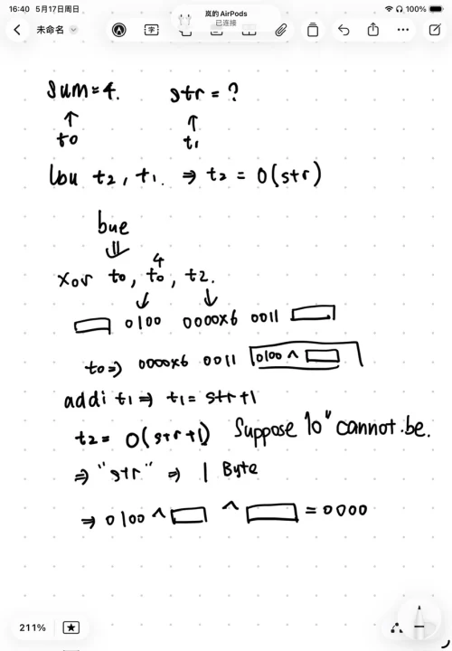

lab5-1
理解简单 RISC-V 程序 10%
请阅读 src/lab5-1/acc_plain.s 回答以下问题 :
.file "acc.c"
.option pic
.text
.align 1
.globl acc
.type acc, @function
acc:
addi sp,sp,-48
sd s0,40(sp)
addi s0,sp,48
sd a0,-40(s0)
sd a1,-48(s0)
sd zero,-32(s0)
ld a5,-40(s0)
sd a5,-24(s0)
j .L2
.L3:
ld a4,-32(s0)
ld a5,-24(s0)
add a5,a4,a5
sd a5,-32(s0)
ld a5,-24(s0)
addi a5,a5,1
sd a5,-24(s0)
.L2:
ld a4,-24(s0)
ld a5,-48(s0)
ble a4,a5,.L3
ld a5,-32(s0)
mv a0,a5
ld s0,40(sp)
addi sp,sp,48
jr ra
.size acc, .-acc
.ident "GCC: (Ubuntu 11.4.0-1ubuntu1~22.04) 11.4.0"
.section .note.GNU-stack,"",@progbitsacc 是如何获得函数参数的，又是如何返回函数返回值的？2%
前两个参数a,b分别通过 `a0` 和 `a1` 寄存器传入。
返回值通过`a0`寄存器来返回。acc 函数中 s0 寄存器的作用是什么，为什么在函数入口处需要执行 sd s0, 40(sp) 这条指令，而在这条指令之后的 addi s0, sp, 48 这条指令的目的是什么？2%
- S0是帧指针，在栈指针在这个程序中起到了指示栈顶的作用。
- 在执行
sd s0, 40(sp)中是将S0的数据暂时存到40(sp)中，防止acc的函数将S0的数值改动 - 在执行
addi s0, sp, 48的时候是初始化当前的帧指针，使得S0的帧指针更新为新的指针
acc 函数的栈帧 (stack frame) 的大小是多少？1%
- 栈帧的大小是48字节
acc 函数栈帧中存储的值有哪些，它们分别存储在哪（相对于 sp 或 s0 来说）？2%
- S0旧的s0是存放在0（sp)中
- a0是存放在8(sp)中
- a1是存放在0(sp)中
- 循环控制变量i是存放在24(sp)中
请简要解释 acc 函数中的 for 循环是如何在汇编代码中实现的。1%
- 初始化：在进入循环前，将零值写入
-32(s0)（初始化res = 0），将参数a的值写入-24(s0)。随后执行j .L2无条件跳转到条件检查部分。 - 条件检查 (
.L2)：- 取出循环变量
i（-24(s0)）放入a4，取出结束边界参数b（-48(s0)）放入a5。 - 执行
ble a4, a5, .L3（意为：如果 \(i \le b\)，则跳转到.L3执行循环体）。 - 如果 \(i > b\)，则不跳转，直接向下执行，退出循环。
- 取出循环变量
- 循环体与自增 (
.L3)：- 累加：读取当前的
res和i进行加法，结果写回res（-32(s0)）。 - 自增：读取
i的值，执行addi a5, a5, 1将其加 1，然后写回i（-24(s0)）。 - 执行完
.L3的代码后，程序会自然顺序向下再次进入.L2进行条件检查，从而形成循环。
- 累加：读取当前的
src/lab5-1/acc_opt.s 也是 src/lab5-1/acc.c 对应的一种汇编程序，它由另一种命令生成：
|riscv64-linux-gnu-gcc -S acc.c -O2 -o acc_opt.s|
请阅读 src/lab5-1/acc_opt.s 回答以下问题：
-
请查阅资料简要描述编译选项
-O0和-O2的区别。1% - -O0 是指的是optimization level 0 无优化：编译器不进行代码转换，会频繁地访问内存。每条 C 语言语句通常都能对应到几条明确的汇编指令。 - - O2 指的是optimization level 2高级优化 特点： - 寄存器分配优化：尽可能将变量留在寄存器中，避免昂贵的内存（栈）访问。 - 控制流优化：重排代码块，减少分支跳转次数。 - 指令调度：调整指令顺序以利用处理器的流水线性能。 - 代码简化：消除死代码或进行常量折叠。 -
请简要讨论
src/lab5-1/acc_opt.s与src/lab5-1/acc_plain.s的优劣。1% - acc_plain.s 的优点：便于调试 - acc_plains的缺点：性能极低，代码冗余 - acc_opts.s的优点 ：性能极高，栈的开销小，代码十分紧凑 - acc_opts.s的缺点：调试困难，编译略慢
理解递归汇编程序 15%
.text
.globl factor
factor:
addi sp,sp,-32
sd ra,24(sp)
sd s0,16(sp)
addi s0,sp,32
sd a0,-24(s0)
ld a5,-24(s0)
bne a5,zero,.L2
li a5,1
j .L3
.L2:
ld a5,-24(s0)
addi a5,a5,-1
mv a0,a5
call factor
mv a4,a0
ld a5,-24(s0)
mul a5,a4,a5
.L3:
mv a0,a5
ld ra,24(sp)
ld s0,16(sp)
addi sp,sp,32
jr ra请阅读 src/lab5-1/factor_plain.s 回答以下问题 :
- 为什么
src/lab5-1/factor_plain.s中factor函数的入口处需要执行sd ra, 24(sp)指令，而src/lab5-1/acc_plain.s中的acc函数并没有执行该指令？2% - 因为factor函数是一个递归函数，call factor指令会调用自身，如果没有ra函数，则会覆盖返回地址寄存器ra为了能够返回原来的factor函数的地址，所以要用ra。 - 请解释在
call factor前的mv a0, a5这条汇编指令的目的。2% - 在riscv语言中函数中传入的整数通过a0传入函数。a5中存的是n-1的值，使得call factor等价于factor(n-1)。 - 请简要描述调用
factor(10)时栈的变化情况；并回答栈最大内存占用是多少，发生在什么时候。3% - 调用时，栈指针sp减少了32字节，用来分配栈帧，经过调用之后，每一次函数的调用都会使栈上分配一个新的32字节的栈帧，最大的占用内存大小为352字节。 - 假设栈的大小为 4KB，请问
factor(n)的参数n最大是多少？2% \(n_{max}≤{{4096} \over 32}\) 解得：\(n≤127\)
src/lab5-1/factor_opt.s 也是 src/lab5-1/factor.c 对应的一种汇编程序，它由另一种命令生成：
riscv64-linux-gnu-gcc -S factor.c -O2 -o factor_opt.s
请阅读 src/lab5-1/factor_opt.s 回答以下问题 :
- 请简要描述
src/lab5-1/factor_opt.s和src/lab5-1/factor_plain.s的区别。2% - 请从栈内存占用的角度比较
src/lab5-1/factor_opt.s和src/lab5-1/factor_plain.s的优劣。2% - 请查阅_尾递归优化_的相关资料，解释编译器在生成
src/lab5-1/factor_opt.s时做了什么优化，该优化的原理，以及什么时候能进行该优化。2%
理解 switch 语句产生的跳转表 5%¶
在 src/lab5-1/switch.c 中实现了一个简单的基于 switch 语句的函数switch_eq :
int switch_eg(long long x, long long y) {
long long result = y;
switch (x) {
case 20:
result = result - 5;
case 21:
result = result + 19;
break;
case 22:
result += 11;
break;
case 24:
case 26:
result -= 20;
break;
default:
result = 0; }
return result; }src/lab5-1/switch.s 为该函数的汇编版本，由以下命令生成：
| |
|---|
|riscv64-linux-gnu-gcc -S switch.c -O2 -o switch.s|
.text
.globl switch_eg
switch_eg:
addi a5,a0,-20
li a4,6
bgtu a5,a4,.L8
lla a4,.L4
slli a5,a5,2
add a5,a5,a4
lw a5,0(a5)
add a5,a5,a4
jr a5
.section .rodata
.align 2
.align 2
.L4:
.word .L7-.L4
.word .L6-.L4
.word .L5-.L4
.word .L8-.L4
.word .L3-.L4
.word .L8-.L4
.word .L3-.L4
.text
.L3:
addiw a0,a1,-20
ret
.L7:
addi a1,a1,-5
.L6:
addiw a0,a1,19
ret
.L5:
addiw a0,a1,11
ret
.L8:
li a0,0
ret请阅读这两个文件并回答以下问题 :
- 请简述在
src/lab5-1/switch.s中是如何实现 switch 语句的。2%- 先是进行一个范围的检查
addi a5,a0,-20，bgtu a5,a4,.L8如果说大于6则返回0 - 再使进行一个跳转表的遍历，即switch。先加载出跳转表的基地址
a4,然后再计算出偏移量slli a5,a5,2,再相加得到目标的地址，最后再通过jr a5跳转到对应的case。
- 先是进行一个范围的检查
- 请简述用跳转表实现 switch 和用 if-else 实现 switch 的优劣，在什么时候应该采用跳转表，在什么时候应该采用 if-else。3%
- 优势：执行的效率高，跳转时间基本上恒定在O(1)，而且代码简洁。
- 劣势，占用的内存大，需要大量的空间来储存跳转表，使用的范围有限，只能存储离散的取值。
.text .globl bubble_sort bubble_sort: addi sp,sp,-32# 栈指针向下移动32字节，为保存寄存器分配空间 sd ra,24(sp)# 保存返回地址寄存器ra到栈中偏移24的位置 sd s0,16(sp)# 保存s0寄存器到栈中偏移16的位置 sd s1,8(sp)# 保存s1寄存器到栈中偏移8的位置 sd s2,0(sp)# 保存s2寄存器到栈中偏移0的位置 mv s0,a0# s0 = 数组首地址（参数a0） mv s1,a1# s1 = 数组长度n（参数a1） li s2,0# s2 = 外层循环变量i = 0 .L1:# 外层循环开始 addi t0,s1,-1# t0 = n - 1 bge s2,t0,.L_done# 如果i >= n-1，跳转到结束 li t1,0# 内层循环变量j = 0 .L2:# 内层循环开始 sub t2,s1,s2# t2 = n - i addi t2,t2,-1# t2 = n - i - 1 bge t1,t2,.L1_next# 如果j >= n-i-1，跳转到外层循环的下一轮 slli t3,t1,3# t3 = j * 8（每个元素8字节） add t3,s0,t3# t3 = &array[j] ld t4,0(t3)# t4 = array[j] ld t5,8(t3)# t5 = array[j+1] ble t4,t5,.L3# 如果array[j] <= array[j+1]，跳过交换 sd t5,0(t3)# 将array[j+1]存入array[j]的位置 sd t4,8(t3)# 将array[j]存入array[j+1]的位置 .L3:# 跳转目标（不交换时来到这里） addi t1,t1,1# j++ j .L2# 继续内层循环 .L1_next:# 外层循环的下一次迭代 addi s2,s2,1# i++ j .L1# 继续外层循环 .L_done:# 排序完成 ld ra,24(sp)# 从栈中恢复寄存器 ld s0,16(sp) ld s1,8(sp) ld s2,0(sp) addi sp,sp,32 ret
.text
.globl fibonacci
fibonacci:
addi sp,sp,-32#栈帧每次下降32bit
sd ra,24(sp)#设置前一个fibonacci函数的地址
sd s0,16(sp)#n
sd s1,8(sp)#前一个数
sd s2,0(sp)#前两个数
mv s0,a0#s0=a0
li t0,0# 因为beq是能在寄存器中进行比较
beq s0,t0,.Ldone #假入说两个数字是相等的0==n
li t0,1
beq s0,t0,.Ldone#假如说n==1
addi a0,s0,-1 #a0=s0-1
call fibonacci
mv s1,a0 #a0=fibonacci(n-1)
addi a0,s0,-2 #a0=s0-2
call fibonacci
mv s2,a0 # a0=fibonacci(n-2)
add a0,s1,s2# fibonacci(n)=fibonacci(n-1)+fibonacci(n-2)
j .L_return
.Ldone:
li a0,1# 当n=0，1 的时候其值是1
.L_return:
ld ra,24(sp)#返回栈的值，回到原来的函数中
ld s0,16(sp)
ld s1,8(sp)
ld s2,0(sp)
addi sp,sp,32
retlab5-2
qemu的方法破解
phase1
- 只要是字符串中含8即可
phase2
- 要满足是两个数字
a,b - 还要满足 \(4^a^b=0\)
phase3
- 输入
5e53fd7d即可
下面展示推导的过程
phase1
- 先是通过
b phase1跳转到phase1的位置设置断点，再c跳转到断点。通过gdb的调试发现在代码的66行有一句if(char2num(*str)==data)的判断语句，而且通过list data的语句发现data的值为8，分析可知是字符串中只要存在8就可以通过
phase2
- 我先通过
b phase2c来定位到phase2的位置 - 然后通过尝试发现
list 75,100能显示全部的phase2代码 - 通过
list sum可以调出来sum的值是4
- 然后汇编的代码进行阅读，做出了如下的推理

- 发现要满足 \(4^a^b=0\) - 经过实验发现40满足上面的答案phase3
- 用了phase2里面的方法之后找到phase3的代码部分，发现最终的input是和
expect的函数进行比对的，查看了input的断点运行之后发现input的值并没有发现改变。 - 所以我只需要调用出来最终expect的值我就可以知道我应该输入什么值了


- 得到expect的值是
5e53fd7d
 本站总浏览
本站总浏览